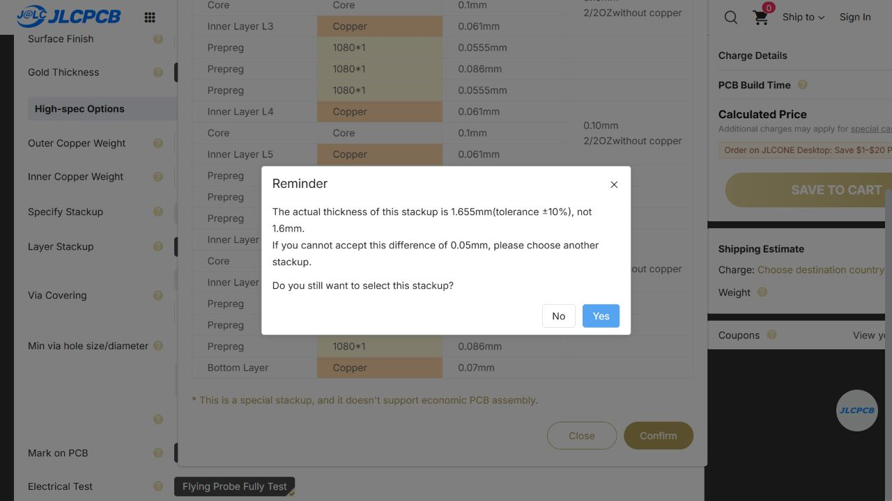

PLANAR STUDIO · A10 SCHEMATIC / A8 HARDWARE · 10 OCTOBER 2026
Manufacturing audit
Five assembled boards
Do not order this revision. Full turnkey assembly is not confirmed.The audit found physical assembly and documentation issues despite zero KiCad ERC/DRC violations. All 43 electronic part codes have sufficient public-catalog stock for five fitted boards before attrition. That establishes a sourcing candidate, not a fully assembled, validated converter.
What passed, and what that means
Fresh KiCad checks report 0 ERC violations, 0 DRC violations, 0 unconnected items and 0 schematic-parity errors. The native schematic, manifest, BOM and placement file agree on 75 purchased placements: 73 top SMT parts and two top-inserted headers. All 43 exact MPNs match the refreshed catalog. No part substitutions were made.
Native geometry measures a 0.160 mm minimum routed trace, 0.287 mm minimum drilled-hole edge gap and 0.349 mm minimum internal routed-via-hole to foreign copper clearance. There are 215 routed vias plus six transformer transitions, all 0.30 mm drill; four connector holes are 1.60 mm plated and four mounting holes are 3.20 mm non-plated. These measurements pass the screened dimensional limits. They do not evaluate process tolerances or excuse the defects below.
The previous courtyard claim was too weak: every footprint has a courtyard, but 14 do not enclose all solder lands. Electrical DRC also permits touching copper on the same net; it misses the U5/C26 assembly problem. This audit explicitly checks those cases.

Required corrections and supplier decisions
M01 · HOLD
Stack and magnetics
Native dielectric stack and 70 um internal copper differ from JLC081622-1080: 1.655 mm finished target and 61 um inner copper. A thickness dropdown is not an approved construction.
Closure: Select an approved stack; update native construction and magnetic/copper-loss model, check core/clip tolerances and validate the transformer. Do not silently substitute the candidate.
M02 · HOLD
Overlapping component lands
U5 pad 5 and C26 pad 1 overlap on V5. Same-net copper does not trigger normal electrical clearance DRC. The two components have connected paste/mask regions.
Closure: Separate the lands and paste regions, reroute the local bypass connection, then recheck actual body/pad clearances and soldering access.
M03 · HOLD
GaN mask / footprint / stencil
U1 pad pairs 1-2 and 10-11 measure about 0.194 mm, below the published 0.20 mm 2 oz pad-spacing threshold for mask bridges. Imported custom polygons carry a 0.10 mm stroke. Power/thermal paste is full area rather than TI segmented examples.
Closure: Rebuild and independently review U1 copper, separate mask and paste from TI RAR0017B; obtain a manufacturable 2 oz stencil/mask process. Do not blindly shrink the power lands or remove mask dams. TI example: 75% coverage on 5/6/7 and 76% on 17 with 0.125 mm stencil.
M04 · HOLD
Courtyards and placement
14 purchased footprints have copper pads extending beyond their courtyards. Existing zero courtyard overlaps therefore do not demonstrate adequate assembly clearance. Several component pad gaps are below JLC recommended spacing.
Closure: Correct courtyards to cover maximum body and solder lands with assembly allowance; inspect all 75 placements. Preserve short GaN loops through specific factory approval where spacing recommendations conflict.
M05 · HOLD
Placement origin and polarity
U1 land coordinates are shifted about +0.625 mm in local Y relative to the TI package center; exported CPL is at the footprint anchor. All 13 polarized U/D/Q footprints have no top-silk graphics. Raw rotations are not calibrated to JLC part models.
Closure: Resolve package centers and rotations against actual supplier placement models; add visible, unambiguous pin-1/cathode markers and approve a per-part placement overlay. Use pad coordinates in Assembly-pad-map.csv as independent evidence.
M06 · HOLD
Panelization and THT
64 x 56 mm outline is below Standard PCBA single/panel 70 x 70 mm minimum. Handling rails are absent, while headers overhang opposite sides. The four 1.6 mm contact holes require an approved THT solder operation.
Closure: Factory-design and approve a routed handling panel with rails, tooling and fiducials; preserve original board outline/mounts. A roughly 90 x 76 mm one-up frame is only a planning envelope, not fabrication data. Approve lead protrusion, pallet access and depanelization before core fitting.
M07 · HOLD
Ferrite and accessories
Two core halves and two clips per unit are separate DigiKey purchases; JLC installation is not accepted. Mating plugs are external and omitted from PCB BOM/CPL.
Closure: Obtain written acceptance and price for sourcing/consignment, post-solder core/clip fitting and any plug-fitting operation. Loose accessory shipment is not standard PCBA scope. Otherwise the delivery is electronics-only PCBA plus separately procured mechanical/accessory parts.
M08 · HOLD
Filled vias / hidden joints
150 routed vias intersect purchased SMT lands. All 221 small interconnect drills must be filled/capped, including six T1 transitions exported as plated pads; four connector holes and four mounting holes must stay open.
Closure: Specify resin fill, copper cap and planarization by drill tool and location. Obtain CAM confirmation for T1 pads, appropriate paste engineering, solder profile and X-ray inspection of hidden joints.
M09 · REPAIR
Printed legend
18 front printed labels are 0.8-0.9 mm high versus the supplier 1 mm guidance. Some polarity text is close to the connector body.
Closure: Enlarge/reposition legend and add polarity marks without covering mask openings or allowing assembly to hide essential orientation. Check final Gerber, not only a 3D render.
M10 · CONDITIONAL
Sourcing
43 exact electronic catalog matches, all with enough snapshot stock for five fitted boards. Lowest stocks: F1 28 and L2 39. Assembly attrition and warehouse/order allocation are unconfirmed.
Closure: Refresh order-specific stock and excess quantities before payment; no substitutions without engineering review. Reserve or pre-order critical parts only after design release.
M11 · HOLD
Electrical acceptance / production test
The existing ratings audit still holds magnetics loss, MLCC effective capacitance/ripple, surge margin and frequency-dependent overcurrent protection. Hardware has not been powered.
Closure: Resolve design limits and perform controlled engineering bring-up. Only then freeze measurable functional-test limits and supplier test procedure. AOI and bare-board flying probe are not a 60 W acceptance test.
M12 · CONDITIONAL
Mechanical fit and materials
Nominal core openings are 17.1 x 6.1 mm and 17.1 x 5.4 mm, with 0.5 mm corner radii. Core tolerances, corner geometry, clips, standoffs and assembled height are not fully tolerance-qualified.
Closure: Approve a mechanical fit trial with the actual core and clips, the chosen finished stack, routed-slot tolerance and underside clearance. No ferrite grinding or extra gap spacer.
Five-board planning cost
Allow $400–650 total ($80–130 per board) for electronics PCBA and separately purchased cores/clips/plugs. The itemized model is $392.47–$601.22, rounded for uncertainty. This is not a supplier quote, and it excludes ferrite-fitting labor, functional test engineering/testing, shipping, taxes and duties. A finished, tested turnkey price cannot be established until those operations are accepted and quoted.
| Item | Low | High | Basis |
|---|
| PCB fabrication, one-up handling panel, ENIG, all-layer heavy copper, filled/capped vias | $100.00 | $250.00 | ENGINEERING ALLOWANCE; no valid online PCB quote; final panel and stack may exceed it |
| 375 fitted electronic components | $111.64 | $111.64 | Current catalog price breaks applied to five-board fitted quantities; no attrition |
| Component attrition / minimum order / replenishment allowance | $15.00 | $40.00 | ENGINEERING ALLOWANCE; not a JLC attrition rule |
| Standard assembly setup, one side | $25.56 | $25.56 | Published fee |
| Assembly stencil, one side | $8.21 | $8.21 | Published fee; special stencil engineering not quoted |
| Feeder loading | $64.26 | $65.79 | 42 SMT codes; upper bound includes the through-hole header code |
| SMT placement | $1.63 | $2.40 | 204 unique KiCad SMT terminals; physical finger count/factory minimum may alter billing |
| Through-hole soldering | $3.91 | $3.91 | Published hand-solder labor plus 20 joints; actual wave/selective process may be different |
| Rigid-board fixtures | $16.42 | $16.42 | Published 1-29 board fixture tier |
| X-ray of U1, U4, Q1, Q2 | $16.40 | $32.80 | 20 inspected parts; aggregated versus per-part-type billing sensitivity |
| Packing / placement confirmation / applicable extra charges | $2.95 | $18.00 | Lower bound: 5 x $0.50 plus $0.45; upper allowance includes factory adjustments |
| 10 core halves and 10 clips | $24.55 | $24.55 | DigiKey ten-piece price breaks; installation not included |
| 10 mating plugs | $1.95 | $1.95 | LCSC/JLC catalog component price; separate accessory procurement, not in PCBA BOM |
The PCB and attrition amounts are engineering allowances, not observed JLC prices. The public quote form yielded stack information but no usable fabrication price; its displayed zero was not used. Special tooling, stack or process surcharges can exceed this budget. Assembly fees follow the published September 2026 fee schedule. No coupons are assumed.
Factory construction differs from the model
The available JLC081622-1080 option lists 70 µm outer and 61 µm inner copper, with dielectric separations 0.2275 / 0.100 / 0.197 / 0.100 / 0.197 / 0.100 / 0.2275 mm. The native design instead uses 70 µm on every layer and 0.130 / 0.130 / 0.170 / 0.180 / 0.170 / 0.130 / 0.130 mm dielectric. In isolation, 61 rather than 70 µm copper increases a given inner winding's DC resistance by about 14.8%; total transformer loss also depends on the actual layer/current distribution and AC effects.

Scope and release sequence
- Repair footprints, paste/mask, courtyards, overlapping lands and orientation markings in native KiCad, then repeat the affected routing, reference-plane and fabrication checks.
- Agree the stack and handling panel with JLCPCB. Recalculate transformer properties and validate core/clip fit with actual materials.
- Approve exact BOM, attrition, package centers, supplier placement overlay, solder processes and inspection criteria. Secure acceptance of ferrite/clip and plug operations or explicitly accept electronics-only delivery.
- Complete engineering bring-up and close the electrical findings. Freeze tested limits and the production test procedure before calling the converter production-ready.
This review covers the available design files and published capability data. It does not certify every manufacturer's land pattern, supplier CAM edits, part moisture condition, solder-joint quality, physical fit, insulation safety or converter function. No files were uploaded to JLCPCB, no supplier was messaged, and no order or reservation was placed. The native board and schematic are unchanged in this audit; the BOM export now includes exact MPN and manufacturer.
Sources and evidence
Fabrication limits · Assembly capabilities · Component spacing guidance · Via processes · Orientation, stock and accessory limitations · TI GaN package and stencil drawing · Core pricing · Clip pricing
Machine-readable report and source hashes · Measured geometry · Native pad coordinates · Fresh DRC · Fresh ERC · Electrical audit